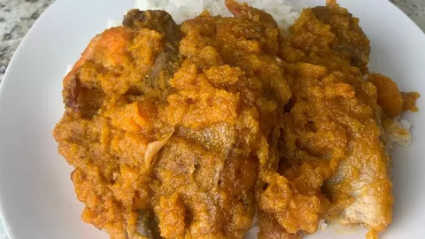

Season your fresh meat with 1 crushed bouillon cube, a pinch of salt, chopped onions, and black pepper. Add 1 cup of water and boil in a medium pot over medium-high heat for 20 minutes until tender. Add the smoked fish or cow skin during the last 10 minutes. Set the meat and broth aside.
In a separate deep pot, heat the oil over medium heat. Add the remaining chopped
onions and blended Scotch bonnet peppers, sauteing until soft and fragrant. Stir in
the tomato paste and fry for 3–5 minutes.
Add the cubed pumpkin/squash directly into the pot with the fried tomato and oil base. Cover and let it simmer for 10–15 minutes, stirring occasionally. Make sure that oil does flood the pumpkin puree. To ensure that this is doesn't happen redue the oil if necessary putting in the pumpkin. As it cooks, the pumpkin will soften and break down. Use the back of the outside of the cook spoon to mash the pumpkin pieces against the walls of the pot to form a thick, smooth sauce. This is very easy to do as you would see if you try this out.
Pour in the pre-cooked meat, smoked fish, and reserved broth into the pumpkin mixture. Stir well to combine. Season with the remaining Maggi cubes and adjust salt to taste. Reduce heat to medium-low and let it simmer uncovered for 15–20 minutes until the stew thickens and oil slightly floats to the top.
Serve hot over a bed of steamed white rice in Liberia, West Africa.